@CBSNews
📝 原文: NBA star James Harden arrested in Houston for unlawful carrying of a weapon, court records show
🇨🇳 译文: 法庭记录显示，NBA 球星詹姆斯·哈登因非法携带武器在休斯顿被捕

🕒 2026-06-13T22:00:00+00:00
| 来源 | 旧窗口内数量 | 本次新增 | 本次淘汰 | 当前窗口内共有 |
|---|---|---|---|---|
| 推文 + Dawn 新闻 | 0 | 76 | 0 | 76 |
| ARY News | 0 | 0 | 0 | 0 |
注：淘汰数 = 旧窗口内数量 + 本次新增 - 当前窗口内共有


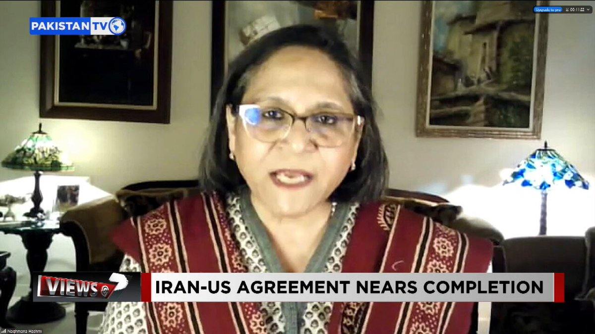
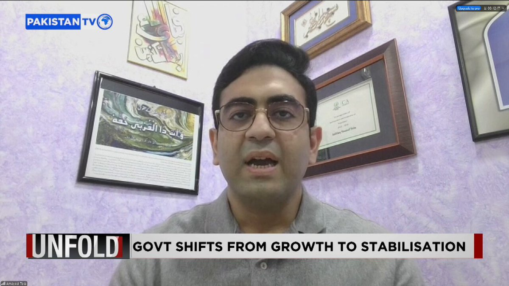
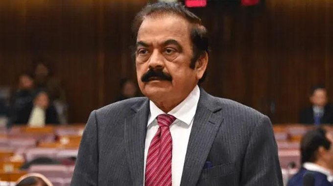


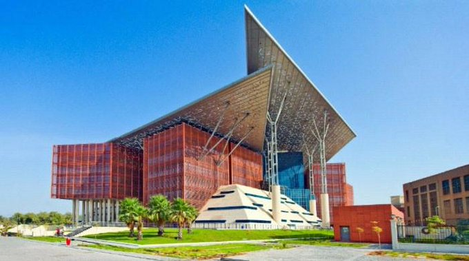

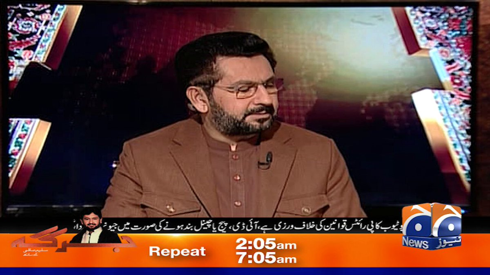
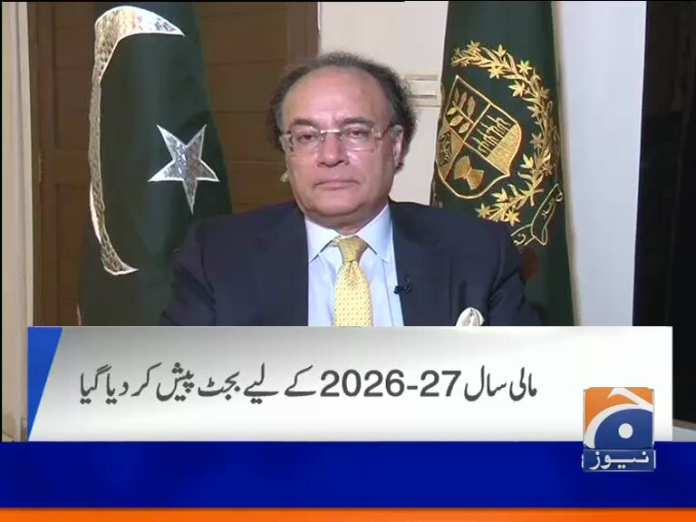

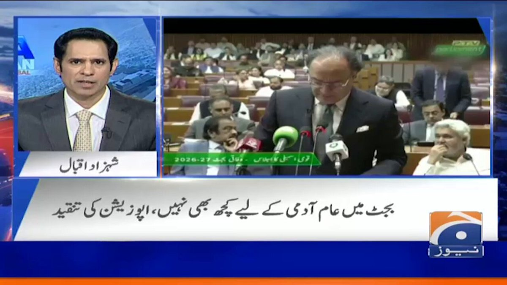
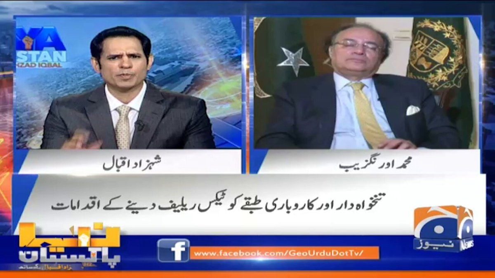
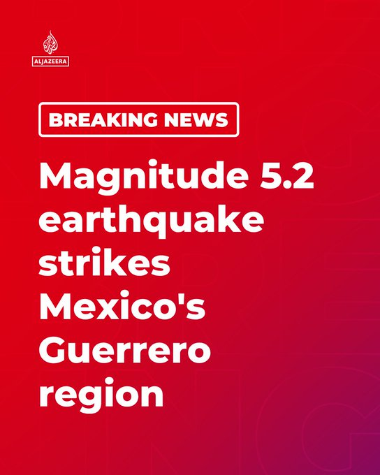
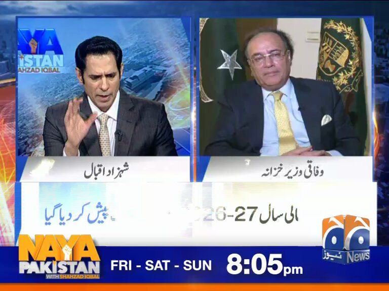
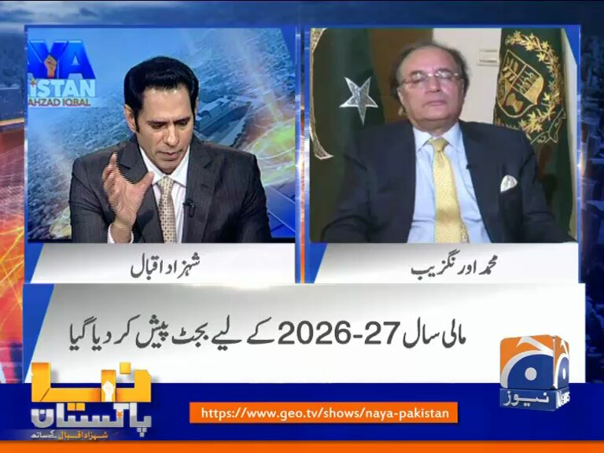
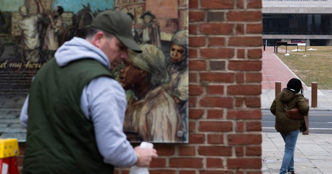
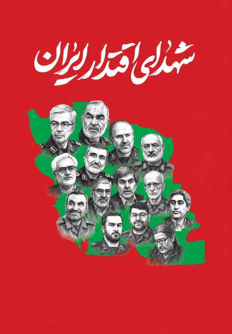


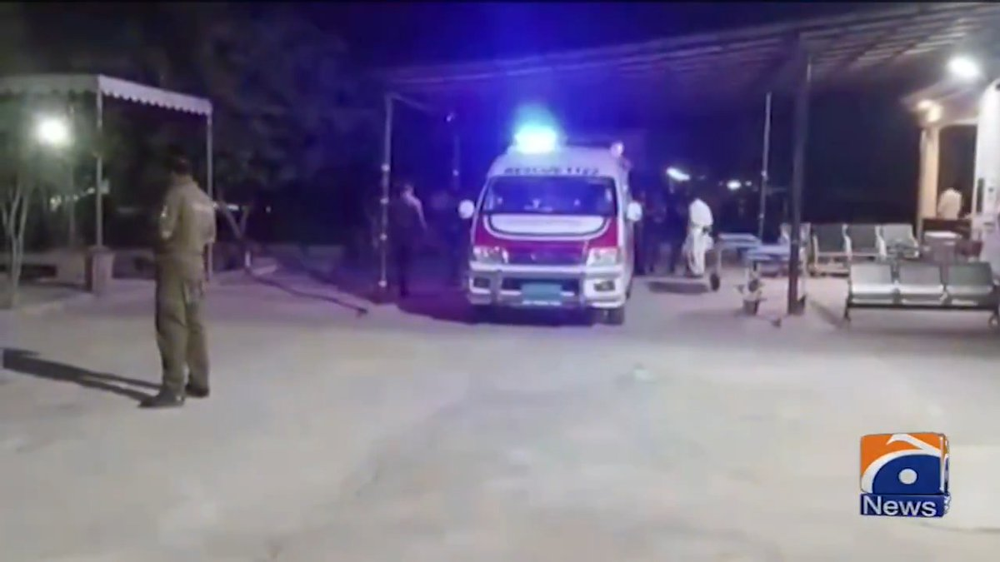

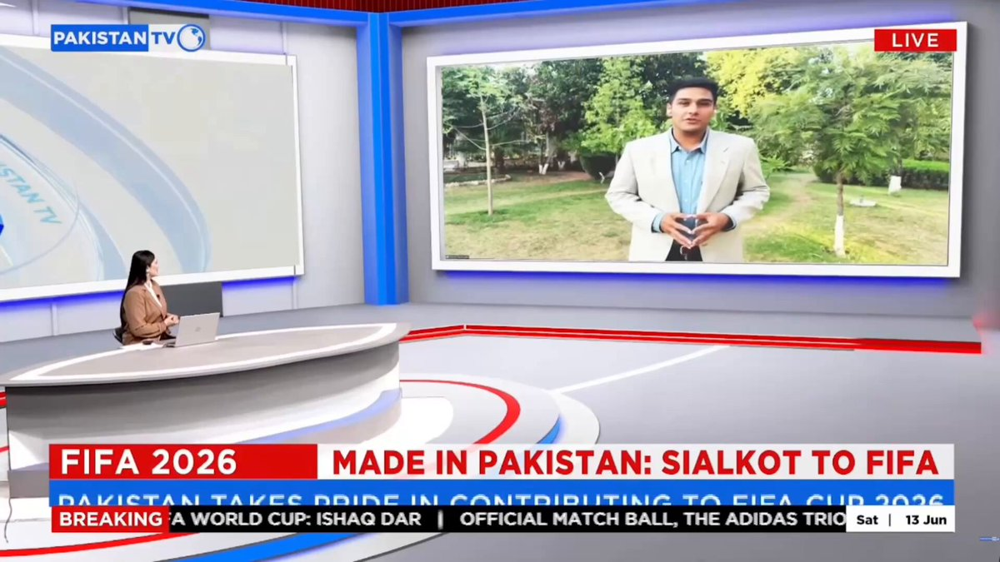
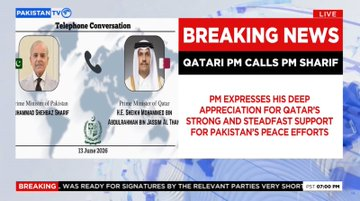

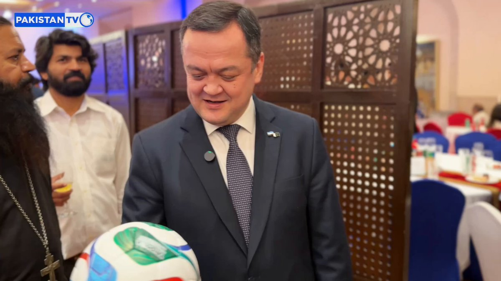


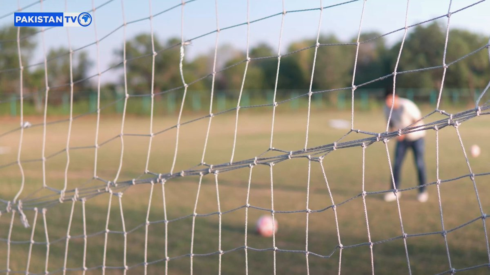

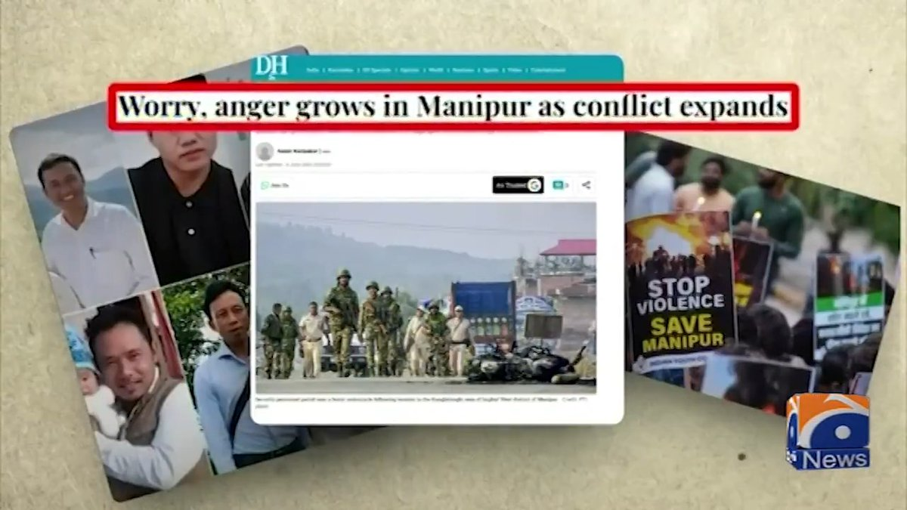